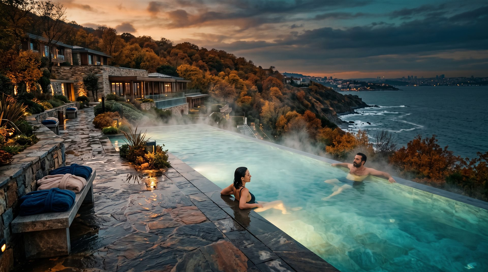

Daireni Seç
1+1 delüks suitten (48–61 m²) deniz manzaralı 4+1 villaya (254–310 m²) uzanan 8 tip arasından ailenize uygun olanı seçin. Hepsi tam eşyalı, ankastreli ve akıllı ev sistemli teslim edilir.
Daire ve Villaları İncele
Karmaşık broşürler yok. Dairenizi seçin, döneminizi seçin, tapunuzu alın. Sürecin tamamı bu sayfada; açık, yazılı ve baskısız.
Her adımda ne olacağını önceden bilirsiniz. Sürpriz yok, küçük yazı yok.
1+1 delüks suitten (48–61 m²) deniz manzaralı 4+1 villaya (254–310 m²) uzanan 8 tip arasından ailenize uygun olanı seçin. Hepsi tam eşyalı, ankastreli ve akıllı ev sistemli teslim edilir.
Daire ve Villaları İncele
Yılın 52 haftası, dört ayrı sezona ayrılır: kış kürleri, bahar doğası, yaz coşkusu, sonbahar dinginliği. Seçtiğiniz hafta her yıl aynı tarihte sizindir. Dönem Bulucu, aile ritminize uygun haftayı önerir.
Dönem Bulucu'yu Aç
Sözleşme sonrası devre mülk hakkınız noter huzurunda düzenlenir ve tapu sicilinde adınıza tescil edilir. Elinizde üyelik kartı değil; satılabilir, kiralanabilir, miras bırakılabilir bir tapu olur.
Sözleşme Sürecini OkuGörseller temsilîdir; resmî proje renderları ile yapay zekâ destekli konsept çalışmalarından oluşur, bağlayıcı taahhüt içermez.
İki kavram sık karıştırılır; oysa aralarındaki fark, bir tapu ile bir üyelik kartı arasındaki fark kadar büyüktür.
Devre mülkte, gayrimenkulün belirli bir dönemine ilişkin arsa paylı, tapuya tescilli bir ayni hak edinirsiniz. Bu hak kalıcıdır: her yıl aynı dönemde kullanım hakkı verir; satılabilir, kiralanabilir ve miras bırakılabilir. Devre tatil ise çoğunlukla süreli bir üyelik sözleşmesidir; süre bitince hak da biter.

| Kriter | Tapulu Devre Mülk (Tor Thermal) | Devre Tatil / Üyelik |
|---|---|---|
| Hakkın niteliği | Tapu sicilinde adınıza kayıtlı ayni hak | Sözleşmeye dayalı kişisel kullanım hakkı |
| Süre | Kalıcı; süre sonu yoktur | Genellikle belirli süreli, süre sonunda biter |
| Kullanım | Her yıl aynı dönem, aynı yerleşkede | Müsaitliğe bağlı; dönem garanti edilmeyebilir |
| Satış | Dilediğiniz zaman satabilir veya devredebilirsiniz | Devri çoğu zaman kısıtlı veya izne tabidir |
| Miras | Mirasçılarınıza geçer | Çoğunlukla mirasa konu olmaz |
| Kiralama | Döneminizi kiraya verebilirsiniz | Genellikle kiralamaya kapalıdır |
Karşılaştırma genel mevzuat çerçevesini özetler; sözleşmenizin ayrıntıları esastır.
Deneyim Günü ziyaretçilerinin en çok sorduğu soruları, satış ekibimizin verdiği yanıtlarla birlikte yazılı hâle getirdik.
Her aşamanın adı ve sırası bellidir. Hangi adımda olduğunuzu her zaman bilirsiniz.
Formu doldurun veya arayın; sizi bir Deneyim Günü'ne davet edelim. Yerleşkeyi gezin, termal suyu deneyin, sorularınızı yerinde sorun.
Daire ve döneminizi seçtikten sonra sözleşmenizi evinize götürün. 14 gün cayma hakkınız her zaman saklıdır.
%30 peşinat + 18 ay taksit; peşin ödemede %25 indirim. Plan sözleşmenizde kalem kalem yazılıdır.
Devre mülk hakkınız noter huzurunda düzenlenir, tapu sicilinde adınıza tescil edilir. Tam eşyalı daireniz anahtar teslim hazırlanır.
Her yıl aynı hafta, housekeeping ile hazırlanmış eviniz sizi bekler. Bavulunuzu alıp gelmeniz yeterli.
Temsilîdir — ödeme çerçevesi bilgilendirme amaçlıdır; güncel koşullar satış ofisinden teyit edilir.
Termal suyun sıcaklığını broşür anlatamaz. Bir Deneyim Günü ayırtın; yerleşkeyi gezin, ritüeli deneyin, kararınızı evinizde verin.